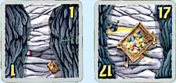
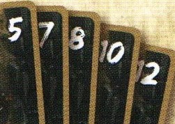

Le Jeu Diamant:
Le jeu Diamant est un jeu de société qui emmène les joueurs en expédition dans cinq grottes réputées pour ses pierres précieuses, mais également pour ses pièges redoutables. Basés sur le principe "Stop" ou "Encore", ils s'aventurent dans les profondeurs de la grotte et décident, pas après pas, de continuer leurs chemins ou de sortir pour mettre leurs trésors à l'abri.
Un joueur:
Pour programmer le jeu Diamant, il fallait impérativement trouver les variables nécessaires pour bien représenter un
joueur.
Il faut pouvoir stoker ses gains après chaque manche afin de trouver le gagnant à la fin, mais aussi lui
donner un nom pour le distinguer des autres joueurs présents. Alors, c'est de là que nous ait venu l'idée de créer une
"class" dans le but de représenter plus simplement un joueur avec les variables suivantes :
- => un nom
- ==> un entier pour stocker ses gains avant la sortie
- ===> une liste d'entier qui contient les gains après chaque manche
- ====> une stratégie de décision
- =====> un booléen qui premet de savoir sa situation actuelle (actif ou inactif durant une manche)
Aperçu et but du jeu:
Les joueurs explorent la grotte d'un pas prudent. À chacune de leurs avancées, ils découvrent d'autres parties
mystérieuses de la grotte et ramassent les rubis trouvés sur leur chemin. Ils décident ensuite s'ils veulent sortir
pour mettre en sécurité tous leurs trésors dans leur coffre, ou s'ils préfèrent continuer l'expédition en s'enfonçant
dans les profondeurs de la grotte à leurs risques et périls ! S'ils tombent dans un piège déjà tiré dans cette partie
de la manche, ils se précipiteront vers la sortie en laissant derrière eux toutes leurs trouvailles et rentreront les
mains vides. Ils peuvent s'aventurer assez loin dans la grotte pour ramasser le plus de rubis possible.
Le
joueur assez malin décide de sortir à temps avant de rencontrer un piège et de récupérer tous les rubis qui sont restés
au sol jusque-là.
Bien entendu, le joueur ayant le plus de rubis dans son coffre à la fin de la partie sera le gagnant.
Les cartes:
Il y a 35 cartes dans le paquet reparti en trois types dans le jeu diamant dont : 15 rubis, 5 réliques et 15 pièges.
- Rubis:
15 rubis de valeur : 1,2,3,4,5,5,7,7,9,11,11,13,14,15,17
Les rubis (de type entier) indiquent le nombre de pierres précieuses que vous trouvez à cet endroit de la grotte.
Elles se partagent entre les joueurs encore présents dans la grotte et le reste se met au sol (rubis au sol).
- Pièges:
15 cartes pièges (3 cartes de chaque type)
Les cartes pièges indiquent les dangers qui se trouvent dans la grotte.
Méfiez-vous donc des puits de lave, des boulets,
des serpents, des pics et des araignées géantes.
Chaque piège est présent en trois exemplaires.
- Reliques:
5 cartes reliques (qui valent 5, 7, 8, 10 et 12 rubis)
Les reliques resteront dans le paquet pour la manche suivante si elles ne sont pas ramassées.
Il peut donc y avoir plusieurs
reliques dans le paquet au fur et à mesure des manches.
Par contre, les reliques sont insérées dans le paquet au rythme d'une
par manche.
Première manche, on ajoute la relique de 5, deuxième manche, on ajoute la relique de 7, etc.
Déroulement d'une partie:
Une partie se déroule en cinq manches correspondant aux cinq grottes. Chaque manche se compose d'une succession d'avancées dans la grotte et de décisions des joueurs.
Déroulement d'une manche:
Une manche s'effectue en trois étapes et toujours de la même manière :
- => Tirage d'une carte
- ==>Partage des gains
- ===> Décision des joueurs
Elle se termine lorsque tous les joueurs décident de sortir ou bien qu'une même carte piège a été tirée.
La partie se termine lorsque l'on a atteint la dernière (cinquième) manche. Le joueur ayant le score le plus élevé
est déclaré vainqueur. En cas d'égalité,
les ex-æquos se partagent la victoire.